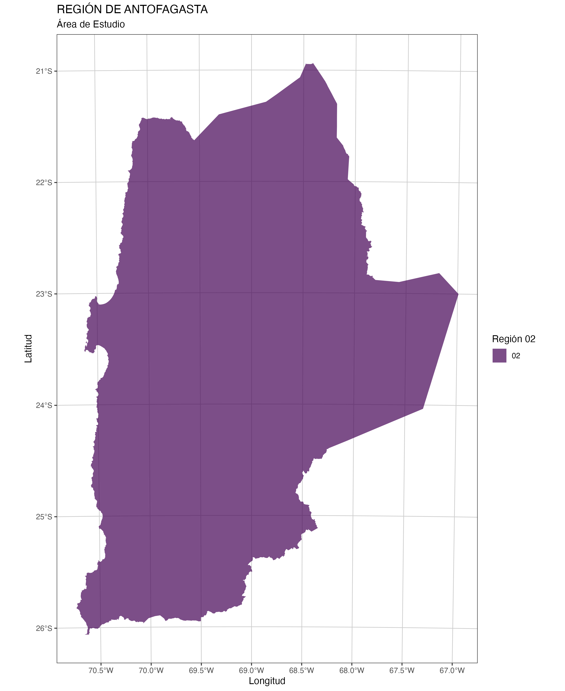

5 Área de Estudio
5.1 Región de Antofagasta
Considerando que el análisis multicriterio tiene como objetivo es identificar zonas idóneas para la construcción de plantas de generación energía eléctrica, donde el espacio de territorial de búsqueda corresponde a la Región de Antofagasta.
La Región de Antofagasta es una de la 16 regiones en que se divide Chile. Su capital es la homónima Antofagasta. Ubicada en el extremo norte del país (norte grande), limita al norte con la Región de Tarapacá, al este con el departamento de Potosí en Bolivia y con las provincias de Jujuy, Salta y Catamarca pertenecientes a Argentina, al sur con la Región de Atacama y al oeste con el océano Pacífico.
Cuenta con una superficie de 126.049 km^2 y una población según el Instituto Nacional de Estadísticas (INE) de 607.534 habitantes en 2017. La región está compuesta por las provincias de Antofagasta, El Loa y Tocopilla. La región cuenta con el PIB per cápita más elevado del país, superando los USD 25.000.

5.2 Comunas
La región de Antofagasta tiene 3 provincias y 9 comunas, como se observa a continuación:
| Provincia | Comuna | Area_hc |
|---|---|---|
| ANTOFAGASTA | TALTAL | 2040306.3 |
| ANTOFAGASTA | ANTOFAGASTA | 3069117.0 |
| ANTOFAGASTA | MEJILLONES | 356884.4 |
| ANTOFAGASTA | SIERRA GORDA | 1288042.4 |
| EL LOA | CALAMA | 1558824.9 |
| EL LOA | OLLAGÜE | 291847.7 |
| EL LOA | SAN PEDRO DE ATACAMA | 2354323.4 |
| TOCOPILLA | MARÍA ELENA | 1243177.7 |
| TOCOPILLA | TOCOPILLA | 403068.5 |
5.3 Espacio grillado
Para el proceso de análisis multicriterio espacial se debe contar con una espacio geométrico base para todas variables que permita evaluar a decidir la zona idónea de lo que se evalúa de acuerdo a los objetivos, para el caso del proyecto la instalación de una planta de generación de energía eléctrica ya sea eólica o fotovoltaica.
Por lo anterior, considerando la extensión espacial de la Región de Antofagasta, se creó una geometría regular tipo grilla de 1000x1000 metros (Figure 5.2), que permite identificar las zonas de forma diferenciable y que permita realizar las operaciones computacionales complejas de forma eficiente.